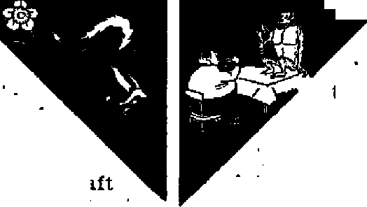
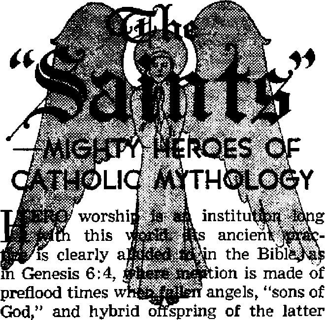
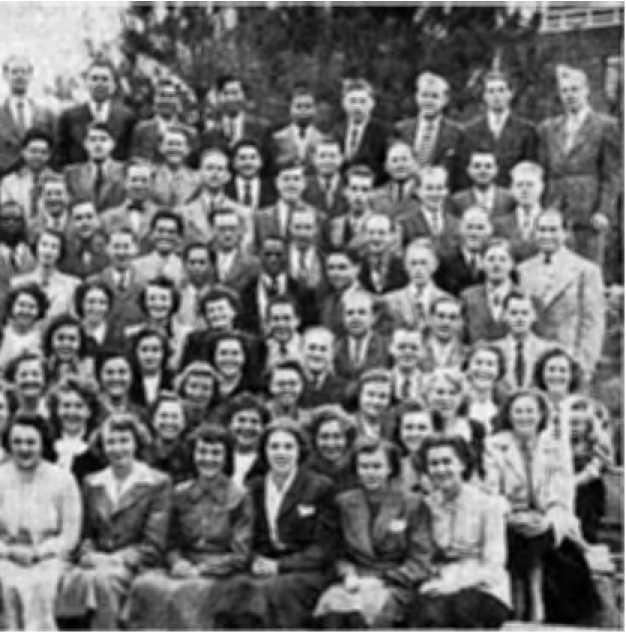

WILL EAST MEET WEST IN PEACE? Was Kipling forever right? Or will the twain meet on earth?
............. ' ----------------------------------------------------------------------------------------------------------------------------------------------------------------------------------------------------------------------------------------------------------------------------------------------------------------------------
Fantastic "links” are creatures of evolution’s fancy
Gamblers’ kingdom of crime flourishes at your expense
THE MISSION OF THIS JOURNAL
News jounces tbw Are able tq keep you awake to the vital tauee of our times must be unfettered by censorship and selfish Interests. “Awake!” has no fetters. It recognizes facts, faces facts, is free to publish facts. It Is not bound by political ambitions or obligations; .it is unhampered by advertisers whose toes must not be trodden on; it is unprejudiced by traditional creeds. This journal keeps itself free that it may apeak freely to you. But it does not abuse its freedom. It maintains integrity to truth.
“Awake !’* uses the regular news channels, but Is not dependent on them. Its own correspondents are on all continents, in scores of nations. From the four corners of the earth their uncensored, on *th«- scenes reports come to you through these columns. This journal’s viewpoint is not narrow, but is IntemationaL It is read in many nations, in many languages, by persons of all ages. Through its pages many fields or knowledge pass in review—government, commerce, religion, history, geography, science, social conditions, natural wonders—why, its coverage is as broad as the earth and as high as the heavens^
“Awake 1” pledges itself to righteous principles, to exposing hidden fpes and subtle dangers, to championing freedom for all, to comforting mourners and strengthening those disheartened by the failures of a delinquent world, reflecting sure hope for the establishment of a righteous New World.
Get acquainted with “Awake!” Keep awake by reading “Awake 1”
Published Semimonthly By WATCHTOWER BIBLE AND TRACT SOCIETY. INC.
117 Adams Street
N. H. Knorr, President
Printing this issue' B70,DOO
Losfitifu in which thb magaiioe fc prbllitad: tern Imantlily—Afrikaans. Enelish, Finnish. Qsrmaii. Norweglui, Spanish. Monthly—Danish, French, Grttk. Porttauese, Swedish, Uiralrdin
Offices Yekiiy spbscriptlon Rate
Amerlm, U.S., 117 Alims St , BrroWyu 1. N.Y. $1 Acstrclfa, 11 Beresford Rd., SLrathfltId, NS.W. 8s Canada, 40 Irwin Ave., Torento 5, Ontario $1 EitfliM, 84 Cracan Terrtet, Untai, W. 2 Ta Stith Africa, 623 RdbIou House, Cipe Town 7s
Entered is mcond-clMs matter at Ertroklyn, N. Y.
Brooklyn 1, N. Y., U. S. A Grant Suiter, Secretary
Five cent® a copy
RanfttaUM shauld be sent lfl office in your country in compliance with regulidoni to guarantee safe delivery of money. Remittances are accepted al Brooklyn from countries where no office is located, by international money order only Subscription rates in different countries are here stated in loal currency. Matico off ijtplratlui (with renewal blank) ja sent st least two issues before subscription bi-plrea. CkinH *f affften when sent to ow office may be expected effective within one mouth. Send your old as well as new address.
Act nf Mirth 3, 187^. Printed la U. 8. A.
m* <j*~> .e v*'-' w*
CONTENTS
|
Science the “Messiah”? |
3 |
Facts Regarding Our Ductless Glands |
17 |
|
Will East Meet West in Peace? |
5 |
The Pituitary Gland |
17 |
|
Past Meetings of East and West |
5 |
The Thymus and Adrenals |
IS |
|
Parting of the Ways |
6 |
Senseless Rioting tn Singapore |
20 |
|
Why the Gulf Between the Two |
7 |
The "Saints”—Mighty Heroes of | |
|
"Missing Links” Between Ape and Man |
9 |
Catholic Mythology |
21 |
|
Of Men and Animals |
12 |
"Your Word Is Truth” | |
|
"The Hoodlum Empire1’ |
13 |
“More Happiness in Giving” |
25 |
|
The Kefauver Committee |
15 |
Sixteenth. Class Graduates from Gilead |
27 |
|
Legalized Gambling No Solution |
16 |
Watching the World |
29 |
“Now it is high time to awake.’—Romans 13:11 &
_____________________•■■•■•.FTl. _TB ........1--------- ---------------------------------------------------------------------------------- .--------- JI---
Volume XXXII Brooklyn, N. Y., April 8, 1951 Number 7
SCIENCE THE "MESSIAH”?
SOBERLY considered, this is a strange world. On the one hand civilization seems backed to the wall, gripped by fear and faced with new and unknown terrors from day to day. International distrust, increasing war clouds and unsteady hands on the helms of state are only a few of the world’s woes. Yet, this chaos falls upon an age immeasurably ahead of any other previous time, from the standpoint of science. Hence, men call it the “brain age”. Like a child holding a shiny new toy while sitting in the midst of a mud puddle, today’s society clings to science, its pride and joy. It is normal to desire health, and a wise man will act against illness at its first approach. It is but natural then to expect this ‘world of the wise’ to seek cures for its condition, is it not? But have you ever discussed much of God, his purposes and matters depending on faith with the average modem worldling? If you have not, the general attitude of scoffing so much received in return may come as a surprise. But though they scoff at the prospect that God might supply their cures, there is absolutely no limit to their imagination of what science might yet do.
Philosopher Bertrand Russell, Nobel Prize winner, has made some pointed observations concerning a coming better world at the hands of science, with ‘democracy, trade unionism and birth control* spread earth-wide. He called for world government, complete monopoly of war weapons and the traditional liberal freedoms of speech, press and religion. He predicted a scientific advance to “a vastly better world, given one single condition: the removal of mutual distrust between East and West”. Interestingly, he said, “The root of the matter is ... a thing so simple that I am almost ashamed to mention it, for fear of the derisive smile with which wise cynics will greet my words. The thing I mean—please forgive me for mentioning it—is love, Christian love or compassion?’
Carried away by the “science savior*’, Edmund Berkeley had published an article in greater detail, “2150 A.D.—Preview of the Robot Age,” in the New York Times* Magazine of November 19, 1950. Outlining the progress of the machine age, Mr. Berkeley went into detail concerning “mechanical brains”, machines now developed to “handle information according to regular logical and mathematical rules”, and to ‘make decisions and determine more than 99 per cent of their own instructions’. Growth of uses for machinemen has precipitated talk of what the author called the coming “robot revolution” and a subsequent “Robot Machine Commission”. As usual, talk jnext shifted to military uses.
The groundwork laid, Mr. Berkeley proceeds to envision the world 200 years hence, in 2150 (A.D.). He foresees the robots paving the way to man’s better world. The seasons would still be with us, but rain would probably come only when forecast and perhaps only when called for. “The earth would be a vast garden, carefully tended by robot workers. The Sahara and other great deserts of today would be fruitful farm lands, irrigated by atomic energy and robot wTater service.”
How can one be sure that all the emphasis would not be placed on the robots’ military advantages? Aware of how man is using atomic energy today, this is not being pessimistic and cynical, but is a realistic and fair question. Unfortunately, Mr. Berkeley can give no assurance. Before his vision of A.D. 2150, he simply says: “A United Nations Robot Commission would be a very great protection to the peoples of the world, if it could be made to function.” Does that answer your question?
Berkeley’s vision is but a tiny comer of the endless labyrinth that is the imagination of scientists. Another, Dr. Jacob Rosin, of Newark, New Jersey, lauds the coming of what he calls a “chemocracy”, with its instituting of a chemical society, replacing today’s hundreds of millions of hardworking farmers with a few thousand chemical workers. He advocates the wholesale capture of society by synthetics, which will liberate humanity from the plant.
Chemistry is fois “new scientific and industrial messiah” that can save the world “by creating a new world of plenty and security”. And every scientist has his own way out, his own road for the world’s salvation on the wings of science. Science, the marvel that has reduced the size of the earth to nothing through modem means of travel, science that has contrived to create artificial kidneys and hearts, now “brains” as well, and that has armed man to the teeth with weapons so fierce he trembles to use them on one hand, but frantically stock-piles them on the other for fear that his neighbors will beat him to it.
Though Mr. Russell was smart enough to see it, he was ashamed to say it: the world for all its brains does not know how to love. Science has not taught it to love, to live, to achieve peace. Science, as far as worldly wisdom is concerned, can offer no redemptive sacrifice to ransoni man from the world of sinful, dying creatures. Instead, it further embroils selfish man because of the demon influence over all powers devoted to the progress of the present system of things. Because worldly science is an implement of this system, it has nothing in common with God’s new world, for which Jesus Christ, the true Messiah, flatly turned down all demon and human offers of world domination.
Believe it or not, God’s Word the Bible has long foretold the restoration of Edenic pleasure to all the earth. The Bible, not science or robots, first told man of the end of wars, the ‘beating of swords into plow-shares’. Furthermore, these promises depend on no quibbling “if’s”, but are certain of realization, “East and West” or no “East and West”. By AD. 2150 the earth will very likely be well on the way to becoming an Edenic garden. But this will occur out of no thanks to human “science”. It will be in fulfillment of the prophecy of a true scientist, Jesus Christ, who foretold the present times of false hopes and that this generation would also see their close.
Finally, the Bible is the only teaching source today with lessons to offer in true love and the gaining of everlasting life. Man, a failure himself, will get nowhere by hiring machines to do his thinking for him. He is only doomed to further disappointment, for in his unbelievable demonstration of ill-wisdom, he coldly turns down God’s kingdom as impractical, but swallows wholesale the wild dreams of worldly scientists. He has chosen science. Those remaining with it will perish with it, for science is no savior.
■fft:
fear, division and strife: every land politicians are at variance over what should be the national policy, as the nations divide into two armed camps. Even as Christ Jesus foretold, 'we are hearing of wars and reports of wars, nations are in anguish, not knowing the way out, and men are faint because of the things they see coming upon the inhabited earth.’ —Matthew 24:6; Luke 21:25,26, New World Trans.
The situation calls to mind the words of Kipling regarding the Occident and the Orient: “East is East, and West is West, and never the twain shall meet.’' (BarrackRoam Ballads) On the one side stands Russia loudly protesting her peaceful intentions and accusing the democracies of warmongering, while parading her armed might at every opportunity. With her satellites and China, she constitutes the East. On the other side stand the democracies, together with some not-so-democratic nations aligned as the West and engaged in a mad armament race against time. A national emergency is declared in the United States, induction of youths into the armed forces is speeded up, while economists shudder at the alternative of spiraling taxes or spiraling inflation.
Yet neither the East nor the West really wants war, and especially is that true of the common people. Justifying their course, a foremost military commander of the democracies once said: ‘Wars do not make sense, but still the nations stumble into them and so we must prepare for war? It
spent as much ahl meM in trying to avoid stum-
bling into war as they spend in preparing for war there doubtless would be less war.
Past Meetings of East and West
The nations of earth were not always thus divided into two camps. Just about ten years ago as Hitler declared war on Russia the East very definitely became aligned with the West in a common effort to stop nazism and fascism. As the months and years rolled by the West supplied the East with the sinews of war, bombed Nazi industries, opened a war theater in Africa and finally a second front in France.
Co-operation between East and West also included the conference table. The first such meeting of the chiefs of the East and West took place at Moscow in October 1943. Previously Churchill and Roosevelt had met on six different occasions to determine policy and to plan strategy, on the Atlantic, in Washington, D.C., at Casablanca and in Quebec. At Moscow the East and West agreed “to continue the present close collaboration and co-operation . . . into the period following the end of hostilities . . . [for] only in this way could peace be maintained”.
About one month later East and West met again, this time at Teheran, the capital of Iran or Persia, where they again expressed their determination to work together in war and in peace. Having reached “complete agreement” and having a “common understanding” they were sure that their concord would make peace an enduring one. They would “banish the scourge and terror of war for many generations”, and looked “with confidence to the day when all the peoples of the world may live free Ilves untouched by tyranny”.
In August 1944 at the Dumbarton Oaks conference, Washington, D.C, East and West met again. There 42 nations worked seven weeks in formulating “a plan for the establishing of an organization of ... all peace-loving nations on the principle of sovereign equality” and in which each nation would bear' responsibility “commensurate with its capacity” and through which machinery would “be organized and armed with force required to act promptly and effectively in suppressing aggression”.
Yalta, in the Crimea, in February 1945, saw the next East-West meeting. There the Big Three discussed and determined policies regarding such problems and issues as the occupation of Germany, reparations, liberated countries, Poland, Yugoslavia and the veto.
East and West met again in April 1945 at San Francisco, California, where they worked together for several months in forming the United Nations organization, the charter of which was soon to be signed by 50 nations. By means of this charter, which was to serve both as a morally binding agreement for nations to work together for peaceful ends and as an instrument to accomplish that purpose in a realistic and practical way, the West fondly hoped to continue its wartime co-operation with the East in times of peace.
Shortly after the forming of the United Nations organization, the East and West met again, in July at Potsdam, on the outskirts of Berlin, Germany. At this meeting, due to death and politics, Truman and Attlee were the ones to bargain with Stalin on reparations, territorial adjustments, freedom of press, elections, plebiscites, etc. Also, the Yalta agreement to give Russia a slice of Poland (east of the Curzon line) and to compensate Poland by giving her a slice of Germany (east of the Oder and Neisse rivers) was confirmed.
Parting of the Ways
East and West met again at the general peace conference held in Paris, from July 29 to October 15, 1946. It was at this conference, which was essentially advisory, its members being unable to make changes in the treaty drafts made by the Big Four, but only to recommend them, that the rift between the East and West really came out in the open as one nation after another took sides. Each side seemed to have good reason for distrusting the other. The United States tried to correct some of the objectionable features of the treaty drafts previously agreed upon, but in vain. Russia was adamant. Among the thorny issues that divided East and West were Trieste and navigation on the Danube. Russia emerged from that conference as the chief beneficiary.
At Potsdam provision was made for the foreign ministers of the Big Four to meet to solve the knotty problems and iron out the difficulties still remaining. The first three of these were held before the general peace conference convened and the sixth and last of these was held more than a year thereafter. They met first in London, then in Moscow, then in Paris, then in New York, then back again to Moscow and finally again in London. Nothing of importance was accomplished at any of these meetings.
The United Nations organization was to effect the continuance of East-West cooperation and it took about a year to perfect its organization to that end. And what have the subsequent years shown as to its purpose being realized? Regarding the second year of its existence the Encyclopedia Americana says: “The year 1947 will undoubtedly take its place in the history of negotiations to liquidate the war and establish an enduring peace as the year of intolerable exasperation and disillusionment." The situation was named the “cold war", in contrast to a “hot" or "shooting war.
The year 1948 saw a worsening of relations between East and West. The United States evolved an ambitious scheme, the ERP or Marshall Plan, to aid the democracies, while Russia extended her sphere of influence by maneuvering a Communist coup in Czechoslovakia and forcing a treaty upon Finland. Claiming that the joint allied commission in Berlin was no longer serving any purpose, Russia instituted the “Berlin blockade". Typical of East-West relations was the political campaign in Italy, where neither side spared effort or expense in trying to win the elections.
Though 1949 saw the lifting of the Berlin blockade—an admission by Russia that the allied airlift (which had sent in two and a third million tons of supplies in a year and a half) had defeated her purpose to get the Allies out of Berlin—nevertheless the general East-West situation was marked with “a degree of intensity in the war of ideologies surpassing even the crescendo of the previous year. Europe remained a veritable political and economic ferment". The West set up a German republic in the Western zone in September and Russia organized a puppet regime for the Eastern zone a month later. Foreign ministers of the Big Four met again but accomplished little except to emphasize how sadly the relations between East and West had deteriorated.
The year 1950 saw conditions getting still worse. In January the Russian-delegated Malik walked out of the United Nations assembly in protest to Nationalist China’s keeping China’s seat in the Security Council, only to return in August to take his turn as chairman and to waste a whole month in lambasting the Western powers for the action taken by the United Nations in Korea. Indicative of the condition of East-West relations were the shooting down of an unarmed'American plane over the Baltic by the Russians, Hoover’s call that Russia be expelled from the United Nations, and Russia’s providing of the North Koreans with military experts, soldiers, jet planes and other equipment in their fight with the West.
Why the Gulf Between the Two
Seven years ago East and West signed the Teheran communique assuring the world that their concord would make peace an enduring one, and in his fourth inaugural address Roosevelt predicted that the coming peace would last a thousand years. But where is peace today? Why are East and West so far apart?
First of all because of differing economic and political ideologies. The West is committed to parliamentary forms of government in which elected representatives of the people make laws, courts interpret them and the executive puts them into effect, whereas the East is wholly totalitarian and derides parliamentary government. The West believes in freedom of speech, assembly, press and worship, whereas the East holds that the individual is wholly subservient to the state and therefore it purges all resisting minorities such as Jehovah’s witnesses. The West grants individuals varying degrees of economic freedom, whereas the East holds that individuals are mere automatons in the state’s production scheme. The West shows at least some respect for truth and justice, the East none whatsoever.
In 1919 Lenin, founder of the Union of Soviet Socialist Republics, stated: “The existence of the Soviet Republic side by side with the imperialist states is unthinkable. One or the other must triumph in the end [and then] a funeral dirge will be sung either over the Soviet Union dr over world capitalism.”
Another factor that has aided in keeping East and West apart has been the difference in languages. At times serious disputes were had over the exact meaning of a term in one language or the other. Conversely, it is also true that the unity of Great Britain, the United States, Canada and Australia is due, at least in measure, to their having the same language.
And, of course, economic rivalry is another divisive factor. Greedy capitalists and ambitious dictators vie with each other for the rich oil fields of Arabia, Iran, as well as for other natural resources. And so they draw farther and farther apart.
Religion's Role
Not only have different political and economic ideologies, different languages and conflicting commercial interests all played their part m driving East and West apart, but organized religion has also played a divisive role. Religion is supposed to be based upon love and therefore it should act as a unifier and peacemaker. But has such been the case? Far from it! Not only is organized religion Itself divided religiously, nationally, racially and politically, but, especially as represented in the Roman Catholic organization and the pope, she has done her worst to drive the two sides farther apart. And what an inconsistent role she plays! While loudly proclaiming a crusade against communism, by her hypocrisy and avarice she has been a leading factor in making people communists.
But the situation is not hopeless. God’s Word assures us that the people of earth will some day be united and that wars will cease. In fact, God is bound to bring about such peace and unity, for were he to permit present conditions to continue indefinitely such would be a denial of his supremacy and righteousness, and lie cannot deny himself.—Psalm 46:9; Isaiah 2:4; 9:6,7; Habakkuk 1:12-14; 3:1-19; 2 Timothy 2:13.
Perhaps some will say, ‘Impossible! Why, human nature just isn’t made that way! Men will always be selfish and so there will always be strife, confusion and war. Permanent peace is a mere Utopian dream!’
Let such of weak faith remember that all things are possible with God. (Matthew 19:26) The Bible not only assures us of the destruction of all discordant and selfish elements at Armageddon, but also of the changing of the hearts of men from selfishness to unselfishness. How will this be accomplished? By means of a clear understanding of God’s purposes; by means of a pure language which he already is turning to the people so that they can serve him with one consent, (Zephaniah 3:9) That East can meet West in peace is abundantly demonstrated among Jehovah’s witnesses today. Regardless of national, racial, and language differences, they are in complete unity, all have the same clear understanding of the purposes of Jehovah God and all are working together to bring honor to Jehovah’s name and comfort to men of good will.
The 1951 Yearbook of Jehovah’s Witnesses gives ample proof that more than one-third million of such servants of Jehovah God are thus united. And in spite of what world rulers may do to them they will not break their unity or integrity by taking sides in the strife between nations or ideologies, neither will they cease preaching. Their remarkable preservation and increase in spite of all opposition and persecution is eloquent testimony that Jehovah’s blessing is upon them and that he is backing them up. Their international convention last summer at the Yankee Stadium furnished striking proof that East can meet West in peace.
BETWEEN APE AND MAN
IN TRYING to account for the origin of man upon the earth, the evolutionists have outdone themselves in their fanatical anxiety to believe in Darwin's theory. Fragments of fossil skulls have been built up by inference and hypothesis into every possible combination of apelike and human features. Vying with one another in these “reconstructions”, evolutionist-anatomists come into sharp disagreement with each other, not only as to details, but even as to the general features of their "missing links”. Always seeking notoriety in the public press, they put fantastic estimates on the age of their fossils, usually without a shred of evidence. Let us examine the sharp contrast between facts and theories in the various “missing links”.
Java Man
Qne of the most famous of these “missing links” is called the Java man, or, to give it the name by which the“scientist likes to impress the layman, Pithecanthropus erectus. In 1891, a Dutch army surgeon, Dubois, discovered in a deposit of river gravel a few fragments of a skull and some teeth. Some time later, at a point 50 feet away, he uncovered a thigh bone. From these bits, proceeding" bn the unjustifiable assumption that they came from the same animal, he proceeded to invent a mongrel species of ape man.
He presented his theories at the Third International Congress of Zoologists, at Leyden. Professor Virchow, president of the congress, pointed out the obvious objection that while the skull fragment was undoubtedly that of a chimpanzee or gibbon, the thhh bone was human, and the circumstances of tneir discovery indicated that they had come from different creatures. This interpretation has been confirmed by other outstanding biologists. The objection so raised at the very beginning has never been satisfactorily answered. Yet evolutionists continue to this day to set forth these unconformable fragments as one of their strongest proofs of the evolution of man from an apelike animal.
It is curious that the original specimens of these fossils, upon which the evolutionists rely so heavily for their missing link theory, have never been made available to qualified scientists for study. Ales Hrdlic-ka, an eminent American anthropologist, complained about this:/ ~It wouldL surely seem proper an^jjgsir^hlg^that specimens of such value to science .should be freely accessible to well-qualified, investigators, and that accurate casts be made available to scientific institutions, particularly after twenty years have elapsed since the discovery of the original. Regrettably, however, all that has thus far been furnished to the scientific world is a cast of the skullcap, the commercial replica of which yields measurements different from those reported taken of the original, and several not thoroughly satisfactory illustrations; no reproductions can be had of the femur and the teeth, and not only a study but 1^yen £ view of the originals are denied to feientrfic men”
No wonder such a controversy has raged among anthropologists about Pithecanthropus erectus. After 40 years of the wrangling, Duboissaw fit to publish a. description of K more thigh bones, alleged to have been iii his possession aHthe time" The whole matter appears shrouded in an atmosphere of outright fraud. But today, simply by the weight of authority of their great minds, evolutionists dismiss the doubts that have never been resolve# and assets tHaTTH^'thigh" Bone' cerfam^^be-Ibng(^^
Piltdown Man
Another such missing link about which violent controversy has raged among anthropologists is the Piltdown man (Eoan-thropus). This againconsists of some frag? ments of a skull, of a jawbqpe, and one tooth, foury^atdiffer enttimes and In dif-fereht3*a?S^od a^r^^MfJjn^^ie^Sputh, Downs of England. The skuli is, by general agreement,'fhat oFa man; the jaw greatly resembles that of a chimpanzee. Again, there is no evidence that these fossils came from a single creature; but to those who want to believe in the existence of ape men, what an opportunity it offers to build around the fragments a muzzle-mouthed, chinless monstrosity.
Especially heated debate^. have centered about the angieafwEicfTthe tooth^ should be^mount^mT^jaxvari^about the capacity of the brain-case. The tooth has been moved from the right side to the left, and from the lower jaw to the upper jaw. Unfortunately, the only portion of the jaw found is the lower right, so the angle of the tooth is anyone’s guess. The first estimate of tffe^ize of the Krain wasAOTO cc. J conveniently arranged to be about .halfway between that of the average man, about Tfito and that of the larger apes, about BOO cd? However, so little of the skull is present that other estimates by equally eminent experts vary widely from this;
today the size is generally conceded to have
No bones outside the head have been found in these deposits. But in spite of the meager evidence, the unsatisfied doubts, the unsettled controversies, this apelike “reconstruction” of Piltdown man occupies a place of honor in the American Museum of Natural History gallery of missing links, there to impress the gullible.
Heidelberg Man
Another fossil, which has been built from a single bone into a complete ape man and hence into a whole race of missing links, is the large jaw found at Mauer, near Heidelberg^ Germahy. This jaw is complete wrEK teeth. Because it is the largest fossil jaw ever found, but has ordinary-size human teeth, it has been acclaimed as belonging to a primitive ancestral form of the human race. From the jaw alone, to believe the imaginative anatomist, it is possible to infer not only the diet, but also the posture and the kind of tools used.
However, it is reported as a fact, not ad-vertised by the evolutionist, that jaws of similar size and proportion areAqund among the ■^dmoK Of j6dav' 7rhose who are not tumbling over themselves to line up with the pseudo-scientific religious dogmas of evolution will properly inquire for more convincing proof.
Peking Man
In contrast to the foregoing “missing links”, so scantily represented by solid bones, the so-called Peking man (Sinanthropus) is represented by a collection of about 40 JsEuTET founcT in the deposits of ancient caves" peqr Peking. China- Men, women, and children are included. Very few bones aside from the skull and jaw have been found, which, together with the observation that the skulls are generally crushed, suggests that the heads were
Severed from the bodies in some cannibalistic or head-hunting rite, A few of the skulls are complete enough to yield a rather accurate measurement of the brain size, which is about IQOO'cc. The forehead is low, with a heavy brow ridge, the mouth is prominent but the chin is not.
Here, one might suppose, is just what the evolutionist has been looking for, a head h^^^J^gtwe.en t^^aygrage man ancTthe age. However, the artifacts found in these caves disclose that this was unquestionably a human race, because stone tools and the^ remains oFcharrecHwood fires aye pye^ent. And, in their zeal for promoting their best example of a “missing link”, the evolutionists overlook entirely the existence of a living race of men which matches very closely the characteristics of the Peking man. The Veddas,. in Ceylon, are a small people, about 5 feet high, having small heads (brain-size afiouik 1000 cc.j, with flat noses and welbmarked^ brow ridges. These people aisolfveincayss, and make Are with the primitive whirling stick. So the much-vaunted Peking man fails to show any marked difference from living races, and serves only to link the past with the present and deny the evolutionary thesis of the constant change of species.
Neanderthal Man
And last among the missing links is the Neanderthal man, first discovered in the Neander valley in Germany, but represented by fossil skeletons of men, women, and children since found thrpughout Europe as well as in Asia Minor, Palestine, North Africa, Rhodesia, Arabia, and Iraq. This race was short and stocky, thick-boned 311(1 large-joIHed, witlTheads the size of modern Europeans, but with low foreheads and weak chins. They lived in caves, used fire, buried their dead, hunted with flinttipped spears the animals in the forests, including the now-extinct mammoths. They did not have tails. All these characteristics rpark them as unquestionabiy^uman, al-tjiough of a degenerate^tyge. Thisrace, too7?2ls within the variations of presentday man. They lived side by side with other races of men with high foreheads and greater stature, and their skeletons are found in the same deposits in Palestine.
Cro-Magnon Man
The exhibit of “missing links’* includes a so-called Cro-Magnon man. This is universally recognized as a typical representative of Homo sapiens, and diftersTh no respect? neither in stature, brain-size, shape of head, nor in wide variability between different individuals, from the races that inhabit Europe today. They are found in large numbers in the topmost sedimentary^ J^ycn?’’ thaf is,?'since ^EKeTIood of NoaPs
................... ~ "
To sum up the evidence from these so-called missing link fossils: Most of them are built upon fancy rather than fact, from a starting point of a few fragments of bone, sometimes human, sometimes simian, and having no relation to each other except for the circumstance of having been found in the same gravel pit. Unchecked by the necessity of conforming their reconstructions to known species, evolutionists have given free rein to their imaginations in cOnjyrmjg up monstrcis&ss lyjtPy .two, of them will agree. Th asp are the specimens which are most apelike, quite naturally, since they are the spawn of the warped minds of atheistic inventors, and not the work of the all-wise Creator of living things. On the other hand, those “missing links” which are represented by complete skulls or skeletons all fall within the range of variation of present-day races and individuals of humankind.
There is no evidence whatever that there has been a gradual change from any race of apes to the human race.—Contributed.
Of Men and Animals
At War and Peace
Allied Foes Rout Mailman
In what may rank as some sort of landmark in “military” history, a wasp and a dog pooled their resources last summer in an unusual alliance to put to rout Daniel Finneran, an unsuspecting mail carrier Ln West Orange, New Jersey. Finneran must have given the appearance of a dangerous aggressor to an unfriendly wasp who plunged to the attack and drew back only after scoring a direct hit. Re
^ound: One Pet Skunk
The Brooklyn Society for the Prevention of Cruelty to Animals found itself face
of too
lentless pursuit forces were already in action seeking a complete knockout victory. While a “neutral” housewife was treating the sting her dog charged onto the scene and supplied the “coup de grdce” by biting Mr. Finneran in the leg. It was apparent that no “cease-fire” agreement v possible, making further with drawal actions necessary. The victim was next heard from safely behind his own lines. j to face with a new kind of problem last October, and the kind problem that made this much close for comfort. It all began when forlorn skunk was rescued from a floating near New York’s Sixty-ninth Street Staten Island ferry slip. Though its leather collar band led to the conclusion that as a probable pet it had been deodorized, this idea was quickly debunked later at the society’s office. For obvious social reasons and because even books on ‘how to win friends’ would be of no avail here, the new arrival was placed in the “isolation” cage. At last, relief from what would have proved a highly disagreeable association came quickly after the pet was advertised. Its New Jersey owner was assured that he could readily have his pet back on condition that he would keep it in his own state henceforth. While in society keeping, the pet was temporarily (and fittingly) named "Blossom”.
Birds Join Navy—Then .Desert
The navy last fall enjoyed the unusual luxury of having volunteer recruits drop in *out of the blue* as It were. The account is told by crew members of the Military Sea Transportation Service transport “Gen. Maurice Rose”. On docking in New York they told of having carried over a thousand starlings for 300 miles of their voyage in addition to the regular crew. The would-be feathered sailors joined the vessel after being blown off course by a west wind while the ship was yet a day out of New York, Attachment for the navy grew when members of the crew served them chow, and four of the birds tried it the captain’s berth. Not until the ship neared Ambrose Lightship and shore did the makeshift “sailors” shed the navy blue and return to the skyways for southfull of navy
Man, Qorilla, Waistline Early last year, a baby female gorilla was brought here from Africa to provide the first act of what was to become a drama of indefinite length and crammed with mental and phys-ai anguish for its “director”. By the r term, reference is made to Cleveland zoo director, Fletcher Reynolds. Without apparent cause, the gorilla, Yokadouma by name, went on a hunger strike. This was a turn of events not bargained for. After every conceivable means of tempting Yokadouma to break down, Reynolds, in desperation, climbed into her cage and personally demonstrated the point by eating a banana. Eureka! the ape responded and had one too. But as soon as Reynolds stopped, so did Yokadouma. He found it necessary to trade bite for bite, which over a period of time went on through endless bananas, roasts of beef, plums and pears. When this report was made, Mr. Reynolds had gained ten pounds, but the gorilla was still fifteen pounds underweight.
How the Gambling Syndicate Corrupts Police and Politicians
ANY are the Bible prophecies that describe present-day conditions. Among such is the one recorded at 2 Timothy 3:1-3 (NW): “But know this, that in the last days critical times hard to deal with will be here. For men will be lovers of themselves, lovers of money, . . . without self-control, fierce.’’
A striking fulfillment of the foregoing words is to be found today ip the United States, where organized crime is establishing itself as a powerful invisible government that threatens the supremacy of the federal government itself. The financial sinews of this “Hoodlum Empire”, so named by International News Service writer Bob Considine, are furnished by gambling in al] its varied aspects.
The Hoodlum Empire extends its tentacles to every part of the nation. Its eastern headquarters are found in New York city, from where it reaches out to points east, west and south. Chicago is the “chief nerve center” and Miami, the “winter capital”, where in mid-winter 75 per cent of the nation’s top hoodlums can be found basking in the Florida sunshine. West-coast gambling, a mere billion-dollar baby, has its headquarters in Los Angeles. The Mafia, strong-arm squad of the Empire, operates from Kansas City, Missouri.
At the top of the Hoodlum hierarchy stands Frank Costello, who reputedly 'collects a million dollars a year from the slot machines in the state of Louisiana
alone. Joe Adonis, one-time bootlegging overlord in Brooklyn, has the reputation of being the smartest casino operator in the country, Mickey Cohen, lord of vice, gambling, etc., is cock of the walk in Los Angeles. Charlie Fischetti, a cousin of Al Capone, is the biggest horse-betting operator in the Chicago area, location of the “Capone syndicate”. Frank Erickson and Harry Gross were the biggest bookmakers, handlers of off-track betting, in Manhattan and Brooklyn respectively until their district attorneys got after them. “Lucky” Luciano, though deported to Italy, still plays a vital role and reaps great profits from the Hoodlum Empire in the U. S.
Income and Corruption
Until recently some 2,000 householders and small shopkeepers in New Jersey were paid from $50 to $100 a week just for the use of their phones a few hours each day. In November of last year the police uncovered a gambling racket in the Bronx doing a quarter-mi Ilion-dollar business daily, and one on Wall Street that grossed $24 million a year. Losses by tycoons of from $100,000 to $500,000 in a few evenings of gambling at a casino are not unusual. The estimate that in the United States gambling is a 30-billion-dollar business with six billion in profits is not exaggerated.
Gambling is not only in position to furnish the chief source of income for organized crime, but it Is also the biggest single source of corruption of police officials and city and state leg-
islators. Life magazine secured informa* tion showing that “each of New York's numbers drops pays the police $750 to $1,500 a month, plus $2 a day for the cop on the beat, $20 a month for the sergeants and $25 to $40 a month for the plain-clothes squad. There is a restaurant on 125th street which is a regular meeting place where the police and numbers bankers discuss terms and new projects. There is. another restaurant down the street where the numbers operators hold a daily session of a sort of mutual protective association formed to try to keep the police demands within reason”.
Because of such steep prices for police protection many operators moved their gambling business to New Jersey and then had a fleet of limousines bring their customers over. In Brooklyn one bookje alone paid a million dollars a year for “ice”, while the grand jury estimated that each day a quarter million dollars was being paid Brooklyn police for protection.
In Miami Beach, Florida, a young councilman, by the name of Mel Richard, was elected on the Reform ticket. Among the first things he did was to go to the chief of police, Albert Simpson, and say: “I can close this whole town to gambling in five minutes, if you will let me make a call on the phone and use your name.” But the police chief demurred; he would first have to talk it over with the city manager.
Shortly thereafter Richard was offered a foolproof proposition that would make him rich. The punchboard business could make a profit of $750,000 annually if permitted to operate openly. If Richard was willing to “play ball” he would get a cut of one-fifth, or $150,000 per year. “Your share will be paid to you through legitimate channels . . . and the payments will never be traced . . . All we ask is that you let It operate. But to preserve your reputation as a reformer, we want you to knock punchboards in the papers and in speeches. We want you to continue ranting and raving. You can denounce the city manager and the chief of police. You can even stage raids occasionally. You can bring along photographers and have pictures of yourself taken, breaking up equipment. You could make speeches saying you’ve done your duty, and the people would believe you. What we ask in return for your one-fifth share is that you never go to the city manager or chief of police and demand, in privacy, an investigation and shutdown of the punchboards.”
When Richard turned it down the agent for the Hoodlum Empire was flabbergasted, but continued: “You must be out of your mind. . . . You were elected partly on your promise that you'd do something about the way the beach-front hotels have appropriated beaches that really belong to the people in general. We’d even see to it that some of those beaches were returned, and you’d get credit for it. We’d guarantee to deliver the necessary votes on the council.”
While from the foregoing it appears that the Hoodlum Empire have the science of corrupting public officials down to a fine art, they have no qualms in using their Mafia to execute individuals who stand in their way, although they prefer not to do so, because of the public indignation that it arouses. Among the victims of the past year were Binaggio, Gargotta, Mickey Cohen’s lawyer, members of the Empire itself, and two Chicago crime investigators, William Drury and Marvin Bas. According to the chief of police in Tampa, the Mafia is imported for important robberies or murders. “He said the police would round up eyewitnesses at the scene of the crime, but by the time they appeared before a grand jury they had received threatening telephone calls and could not remember anything about the occurrence.”
The Kefauver Committee
In response to popular clamor the senate appointed a committee to find out if there was indeed a nationally organized crime and gambling syndicate, According to Life magazine, Senator Ferguson, of Michigan, was the logical choice, as he had succeeded in breaking up gambling in Detroit without the help of any local officials and police. However, because he was a republican and gambling and crime flourishes in the large cities which are mostly democratic, he was shunted aside and a freshman senator, Kefauver, of Tennessee, was chosen.
Reporting on the way in which this committee carried on its investigations, Time magazine states: "In inviting New York's slick-haired gambler, Frank Costello, to testify about gambling, the U. S. Senate had been strictly high class all the way: it had not only communicated with him in a manner befitting his station (i.e., through his attorney), but had arranged to have cops at the airport to prevent any possible chance of his getting plugged upon arrival. Last week, as he waited to keep his appointment, the ‘Prime Minister of the Underworld' was determined to be just as polite to the Senate.”
Typical of the naivete with which the Kefauver committee has conducted its investigations were the questions it put to thischief of gamblers: was he a member of a crime syndicate or did he have anything to do with bookmaking (gambling) ? “No, absolutely no,” was his reply, and the committee seemed to be satisfied. They handled another gambler, Carroll, with such politeness that a baffled spectator exclaimed: "They act like they was trying to give him the Congressional Medal.”
Republican Philadelphia got more of a jolt from the committee, which was also outspoken regarding the situation in Chicago. But in Kansas City, Missouri, admitted headquarters of the Mafia and where just recently a double gangland murder had occurred, and where gambling, in spite of the "heat” being put on, was doing a 3-million-dollar business a month, the committee told the city that they had a good police department. Governor Smith, upon being queried regarding his relations with Binaggio, admitted that the gambler had called on him three times; the first time because “he wanted to see what the governor's office was like”, and the second time "to ask where was a good place to go fishing”; the third call did have a little more political significance.
New York, Chicago, Miami, California, and other cities and states have organized their own crime commissions to investigate the tie-in of gambling and police and political corruption, and everywhere the picture revealed is the same: a "powerful underworld organization making tremendous profits and paying fancy prices for police protection. Because of this widespread condition many argue that if gambling were legalized the government would profit instead of the criminals. This was the position taken by Mayor O’Dwyer and which supposedly so shocked Governor Dewey. Incidentally, in this connection Governor Dewey stated that such gambling could not take place without the knowledge and consent of the higher-ups. But gambling was wide open at the state’s health resort, Saratoga Springs, New York, until the senatorial investigation publicized the situation, forcing Dewey in the midst of a political campaign to act. And, according to The Nation^ state senator Halpern’s resolution to investigate gambling in New York state had Dewey’s backing until it was announced that the committee would begin with Costello, the ace of gamblers. Then “Dewey's office passed word that Halpern's resolution was to get nowhere fast. The resolution died in committee”.
And while O’Dwyer took exception to Dewey’s statement that gambling could not exist in any large measure without the knowledge and consent of the higher-ups, yet when reporters put personal questions to him regarding his connections, repeatedly, while not losing his temper, “his eyes went steely.” But it would seem that any governor or mayor that could be ignorant of such situations in his state or city is so stupid or so ill-informed as to be every bit as incapable of holding the job as though he were corrupt.
Legalized Gambling No Solution
But back to the legalization of gambling. In one midwest city slot-machine operators are agitating for the banning of slot machines because they made more money by operating them illegally and paying for protection than they do now that they have to pay taxes on them. Nevada is no example of prosperity by means of taxes, for how many people would go there to gamble if it were legal in there own state? What Nevada mortally fears is that other states will legalize gambling and thus take away from it all this revenue. And yet, in spite of all the profits from gambling, Las Vegas is a very, very poor city. Its police force is three times as large as and its library one-fifth that of cities of like size. It is unable to pay for improvements in spite of all its claimed revenue from gambling. The issue of legalizing gambling was put before the people of Arizona, and the governor was offered $200,000 by the Hoodlum .Empire, if, upon legalization, he would put their man in charge of the gambling setup. According to the California Crime Commission the answer is not legalization. In a public statement it said:
“It is claimed that licensing would remove criminals from the bookmaking racket, would end gang warfare, and eliminate the inducement for corruption.
“If such beneficent results would in-fact follow from a system of licensing, the proposals would, indeed, be worthy of serious consideration by all those interested in the improvement of our civic well-being.
“Our study of the bookmaking racket, however, has convinced us that licensing of off-track betting would produce precisely the opposite result.
“It would give free rein to our most men* acing national racket, and would inevitably result in a tremendous increase in racketeering and organized crime in many forms . . . The power to choose licensees who can operate a handbook profitably and successfully must inevitably rest with the ‘wire service’ organization. No bookie without the ‘service’, even though licensed, could compete with another bookie who had the ‘service’. The ‘wire service' is not a public utility, and there is no way in which the state could compel the ‘service’ to supply all licensees alike. Manifestly, such a situation would only increase inducements to corruption and the incitements of gang warfare . , , These conclusions are illustrated by the experience of the state of Nevada.”
There one Bugsy Siegal, who controlled the legally licensed books, was murdered by his gangster associates. Legalizing gambling did not make his job less hazardous.
So long as people are greedy for selfish gain, so long as people are discontented with their lot and crave excitement, so long as human nature is what it is, so long as the Devil is in control of this system of things, so long as the world’s largest religious organization encourages it, gambling will continue to plague ^mankind, and with it the sinister Hoodlum Empire. Only the kingdom of God can successfully cope with such forces, and only it can change the heart of man. The Bible shows that the time for it to do so is near at hand.
FACTS REGARDING OUR
THE great all-wise Creator did not needlessly burden the human body with any unnecessary parts. Though men at one time glibly spoke of the body having some 180 vestigial organs, modern scientific thought on the matter is well expressed by the late Oxford Professor E. S. Goodrich’s observation, "He would be a rash man indeed who would now assert that any part of the human body is useless.”
Among the organs at one time considered vestigial was at least one of the ductless glands. A gland is an organ that furnishes a secretion to the body. For instance, the salivary glands furnish saliva by means of ducts or openings. The glands without ducts add their secretion directly to the blood as the blood circulates through them, and hence are termed endocrine, literally, '‘separating within,” glands. These include the pineal, the pituitary, the thyroid, the parathyroids, the thymus, the adrenals, the islands of Langerhans, and the gonads or sex glands.
These endocrine glands work in conjunction with the sympathetic nervous system and serve the purposes of growth, nutrition, sex and involuntary muscle control. They are mutually dependent upon each other and their secretions are generally referred to as hormones, that is, exciters.
Though the presence of these glands in the human body was known to the earliest students of anatomy, yet only in recent times has knowledge been gamed as to their functions and, in view of divergence of medical opinion, there evidently still is much to be learned regarding them. They account for mental, physical and emotional differences and therefore have well been termed “creators of personality”.
The pineal gland, literally “pine or cone-shaped”, extends from the lower central part of the brain and has a little niche for itself in the bony structure of the head. Ancients thought it to be the seat of what they termed the “soul”, and until recently it was thought by some to be a vestigial organ. Diseased conditions of this gland are generally followed by premature sexual development and early physical and mental maturity.
The Pituitary Gland
Though but the size of a pea, the pituitary gland has been termed “the most important gland in the body”. Situated at the base of the brain, it was once thought to be the producer of spit and hence its name, from the Latin pituita which means spit. Now it is known that this gland produces hormones which, with one exception, do not participate directly in physiological reactions. Each of its various secretions (tropic hormones) has its target organ which it spurs to action. It acts as stimulator to the other endocrine glands.
The pituitary gland is composed of three parts, a front and rear lobe and an inter-mediate part, each part having its own peculiar structure, hormone and function, The front lobe controls growth, and if overactive in youth results in giantism, upwards of eight
feet in height, or extreme Obesity, such as a young man of 23 weighing 787 pounds. Overactivity of this outer lobe in adults causes the head, neck, hands and feet to grow to abnormal size, known as acromegaly, Underactivity in children results in their becoming dwarfs.
In the last two or three years men of medical science have discovered that a hormone of this front lobe of the pituitary gland, ACTH (Adreno-Cortico-Tropic-Hormone), gives striking relief to victims suffering from arthritis, because of its stimulating action on the cortex of the adrenal glands. Widespread use of it has been hindered by its expense, it taking the pituitary glands of 400,000 hogs at the cost of four and a half million dollars to produce one pound of this hormone.
The rear lobe of the pituitary gland through its hormone assists in regulating the body’s use of carbohydrates. Known as pituitrin, it also has the ability to contract certain of the involuntary muscles, or those over which man has no control. It “is so powerful that when diluted with IS billion parts of water it produces uterine . constrictions in small animals”.
The Thyroid and Parathyroid
Hardly less important than the pituitary gland is the thyroid, the two lobes of which are fastened to each side of our Adam’s apple, in the shape of a shield, which is what its name means. The speed of digestion, of breathing, of the heart beat, and even the speed with which we let ourselves lose our temper are all regulated by the thyroid gland and its hormone, thyroxin. It keeps the other endocrine glands from becoming overactive. This hormone also plays a vital role in the body’s production of hydrochloric acid and has a direct bearing on the efficiency of the kidneys.
An overactive thyroid gland causes worry, nervousness and increased sex drive.
Children born with inactive or undeveloped thyroids are idiotic, present a bestial appearance and are known as cretins, We are told that but 1/2000 of an ounce separates potential genius from idiocy. The thyroid gland depends upon iodine for its proper functioning, and iodine is one of the most fugitive elements found in the soil. One of the symptoms of thyroid unbalance is the goiter. A physician traveling in quest of a solution to thyroid ailments found that in Japan only one in a million suffered from goiter or cretinism. The reason for this he found to be the fact that the Japanese used pulverized kelp, a deep-sea weed, instead of salt in seasoning their foods. The mutual dependence of the ductless glands is strikingly shown in the case of the thyroid, as its secretion only becomes thyroxin upon mixture with a hormone of the pituitary gland.
The four parathyroids, as their name indicates, are located alongside the thyroid gland, two in back of each lobe. They are about the size Of a pea and help the body to utilize calcium. According to some authorities the “thyroid and parathyroids form a single apparatus which, besides carrying on calcium metabolism, takes part in the defensive processes of the body at large”, and so speak of the “thyroparathyroid” apparatus as a functional entity. Removal of all the parathyroids causes death by spasms or tetany, and the blood of such animals when injected into other animals was found to cause the same symptoms.
The Thymus and Adrenals
The thymus is located in the front upper part of the chest below the thyroid. It plays-a vital role in growth, increasing in size until puberty, after which it gradually decreases until it almost disappears. Extracts fed to rats caused them to be very merry and to mature in one-third the usual time.
There is some difference of opinion as to its secreting a true hormone, some holding that it stimulates growth by means of its large amounts of phosphorus which it sends into the blood by means of lymphocytes. In calves it is one of the glands that goes by the name of sweetbread.
Adhering to the renals or kidneys are the adrenals, one on each. They do not seem to have any physiological connection with the kidneys, however. Consisting of an outer layer known as the cortex and an inner part, the medulla, they are so vital to life that their removal causes death within 12 to 48 hours. As many as 26 different hormones have been extracted from the cortex. One of these, cortisone, synthesized, was found to produce amazing results in the treatment of arthritis and kindred ailments of the connective tissues.
The rear lobe or the medulla of the adrenals secretes adrenalin or epinephrine, which is found in the blood at the ratio of one part in 20 million; with a reserve in the gland, however, of 100,000 times this amount. It comes to the aid of the body in times of stress, speeding up heart action, increasing ability to see and hear, stopping digestion and lessening fatigue, all making for strength in time of danger. That is why when confronted with sudden danger one can perform feats that he could not otherwise perform. Recently scientists have discovered another secretion of the medulla, nor-epinephrine. By constricting the size of the blood vessels it helps adrenalin to do its work of increasing the blood pressure.
According to a foremost medical scientist, Dr. J. R. Mote, “the adrenal gland plays perhaps a major role as to whether or not a person is sick or well, regardless of the illness or the cause thereof ... In other words, the person with an adrenal gland that can adequately react to various types of stress . . . remains well, whereas the person with a *mal-functioning’ or ‘mal-stimulated adrenal gland eventually comes down with any One or more of an almost unlimited variety of diseases.”
The pancreas has the distinction of being both a gland furnishing secretions, enzymes, by means of a duct, and a hormone which enters directly into the blood. Actually, however, the hormone, insulin by name, is not the product of the pancreas itself but of specialized cells located in the pancreas and which go by the name of the “islands of Langerhans”, named after their discoverer. Insulin keeps the sugar in the blood at the right amount and thus acts as a check on adrenalin. Excessive use of sugars and starches will exhaust the islands* supply of insulin, causing diabetes.
And finally, the gonads or sex glands, the testes in males and the ovaries in females. These glands not only provide the necessary cells for the reproduction of the race but, in co-operation with the rest of the endocrine glands, determine the sex characteristics, mental, physical and emotional. They account for the difference between a capon and a rooster, a gelding and a stallion, and for a eunuch’s weakness. Glandular disturbance was found to be the cause of women suddenly taking on masculine characteristics, which condition was corrected by proper gland therapy.
Clinical tests show that glandular derangement and criminal types go hand in hand. But the question- may be asked, Which comes first and which is the cause —the criminal tendencies or the glandular derangement? According to one eminent authority on glands the human race is bankrupting itself by its modem high speed of living and its emotional excesses. Therefore the wise person, rather than blaming his indiscretions on the way he is made, on his glands, will endeavor to exercise self-control, knowing that even as regards our glands it is literally true, what a man sows that he will also reap.
By "Awoke!” corre&pondant in Singapore
Located at the crossroads between the East and the West, in which many Oriental and Occidental races and religions are found, Is a veritable melting pot—Singapore! This great metropolis with its polyglot of people has boiled and bubbled for centuries. Suddenly, last December, a demonic spark of emotionalism touched off a terrible racial and religious explosion. Sickening and senseless, its consequences were horrifying—a score of people killed, hundreds sent to hospitals, thousands made temporarily insane! It was indeed a critical situation hard to deal with, and it lasted three days.
The riotfs seeds were sown several years ago during World War II on the island of Java, now called Indonesia, There, two Hollanders, Mr. and Mrs. Hertogh, and their five children lived. When the Japanese conquerors moved in the husband was thrown into a concentration camp, and the mother in her distress gave her five-year-old Maria to a Malay woman for safekeeping. The Hertoghs were Catholics; the Malayan was a Moslem or Mohammedan.
A year ago the Hertoghs located Maria, now thirteen, in Singapore and instituted court proceedings to regain her custody. During this drawn-out legal battle Maria, or Nadra as her foster mother called her, was married according to Moslem rites to a 24-year-old Malay schoolteacher by the Chief Kathi of Singapore. At the end of November the Supreme ’ Court annulled the marriage and ordered the girl returned to her parents, on the ground that the father was the legal guardian and the only one who could give her away for adoption. Pending an appeal of this decision the child was placed in the Catholic Home of the Good Shepherd.
The daily papers made much of this case as a human interest story. The English and Chinese papers showed pictures of Maria happy in the convent, while the Malay papers showed the child in tears, with articles headed, “Nadra cries and asks for help.” Thus the feelings of the Malays and Indians were worked up as they were led to believe that the decision was aimed at their religion.
Judgment on the appeal was to be handed down on December 11, and 4,000 Malay and
Indian Moslems were on hand outside the court However, the tension was so great that the decision was postponed. Angered, Some of the youths began attacking parked cars, and when a constable arrested one of them a general melee broke out. Three shots were fired, two Malays dropped wounded, the crowd surged forward, and the riot burst into full flame.
All afternoon the sense/ess mob burned cars, and with sticks and bottles attacked everyone that looked like a European or Eurasian. Their victims, dead or alive, were thrown into the monsoon drains. The police, Malay Moslems, generally stood by and offered no help to the victims or resistance to the maddened mobsters, people innocently going about their business, visitors from the airport, sailors ashore from their ships—none of whom had any idea what was happening —were suddenly mobbed, and many died not knowing why. An airman witft his wife and eight-year-old girl were early victims. A Danish doctor of the World Health Organization with his wife and nurse, an Associated Press reporter, a Jewish doctor hurrying to the hospital because of the emergency cases, two Catholic priests, and hundreds of others were the victims of this wicked reign of terror. Having lost all sight of the original issue, demon-possessed gangs roamed and plundered in an insane frenzy.
British troops were not called in until 24 hours after the trouble began, and by that time the mob had attained considerable bravado. Tear gas, smoke bombs, rifle fire, a week-long curfew, and the arresting of hundreds, as well as the patrolling of the city with armored cars and helicopter, were necessary measures to quell the madness and return the city to law and order. All this time business was completely paralyzed.
Several official inquiries are under way aimed at preventing this seething kettle from blowing up again, but whatever measures are taken the fact remains that we are living in “critical times hard to deal with", when human governments everywhere are finding themselves unable to cope with the rising tide of satanic troubles. Proof positive that we are living in the last days’—Luke 21:25,26; 2 Timothy 3:1-5, NW.
added to conditions of terror then in control. Says the account: “The Nephilim were in the earth in those days, and also after that, when the sons of God came in unto the daughters of men, and they bare children to them: the same were the mighty men that were of old, the men of renown.”—Genesis 6:4, Am. Stan. Ver.
Widespread practice of the so-called “Christian religion” by the various sects and cults of Christendom for the past sixteen centuries has served only to increase such idolatrous creature worship behind a cloak of Christianity. Not content with exalting living’creatures in the eyes of the credulous, the 'mother of Christendom’, the Roman Catholic Church, has capitalized on its appeal to the super-credulous by lifting up individuals to arbitrary positions of gloiy after death, from which stations they are supposedly able to intercede with God on behalf of the living.
In specific fields of endeavor, Isidore, a poor twelfth-century Spanish farmer, is the patron saint of farmers, St. Chrisio-pher takes care of travelers. He is alleged to have carried Jesus as a child across a river, but his very existence is even open to serious doubt. St. Jude is the patron of hopeless cases, the “Little Flower”, St. Therese, is in charge of missionaries and St. Lucy is petitioned for cases of eye disease. Those seeking a happy death take their problem to St. Joseph, The interesting combination of relief from storms and hydrophobia is ascribed to Walburga, English saint of the eighth century.
Patients afflicted with cancer might try prayer to St. Peregrine, a converted wild adventurer once supposedly stricken with and cured of the dread disease. Nor are animals left out. Special services for blessing domestic beasts accompany the feast for St. Anthony in Rome, St. Francis in England and St, George in at least part of Switzerland. St. Hubert supervises the hunt, and fully rigged hunting parties frequently pause at the start so that their dogs can be blessed in Hubert’s honor. Of course, they hope Hubert will then intercede for them. The poor fox thus has dogs and saint alike on his trail!
Much Ado About Nothing
Catholic hierarchs have bestowed the name “Dismas” upon the friendly thief of Calvary, and because Jesus held out to him the hope of a resurrection in the new world, they declare the Lord made him a “saint” then and there. He seems to have inherited the saiiitdom of the “down and out”. Dempster MacMurphy, late newspaper executive who specially admired “Dismas”, called him a “mine run” thief, “a hoodlum saint who roams the outfield of eternity making shoestring catches of souls.”
Nicholas, fourth-century bishop of Myra, is the patron saint of children. Early legend attributed the personality of “Santa Claus” to him. Ripley’s “Believe It or Not” informs us that he is as well the patron of thieves and pawnbrokers, and this harmonizes with the fact that his symbol, three gold rings, has been adopted as the long-established sign of pawnshops. In the spring of 1950, the pope delegated to the archangel Michael the patronage of all policemen.
Girls seeking a husband can turn to St. Catherine. In Paris each year, this saint’s feast day, November 25, is given over to celebrations and a special mass in her honor. Girls of twenty-five can be "Catherine ettes”, allowable that one year of their lives, and share in the festivities. In the course of the day they pray before Catherine’s shrine, asking her to bring along the “right man”, or, feeling they have already met him, to put the idea into his head to speed things up a bit. Incidentally, Catherine is also the patroness of philosophers and mechanics.
Groundless are the reasons for naming saints as patrons of certain endeavors. St. Blaise had his flesh tom by an iron comb; hence was made patron of wool carders. St. Bartholomew met death by flaying, to become patron of the tanners.
St Cecilia is typical of the cases borne down by Catholic folklore. She was at one time supposedly betrothed to an angel. Genevieve made frequent communion with the “other world”; Patrick’s aggressive exploits against Ireland’s snakes are well known. And sufficient evidence to prove even the existence of England’s patron, St. George, is lost in a maze of fairy tales. From three deaths, by being chopped into small pieces, burial deep in the earth and being consumed by fire, he is successively resuscitated. In the tales about him, dead men are recorded as being revived for baptism, armies and idols are destroyed instantaneously and from his severed head, not blood, but milk flows forth. His fabled slaying of the dragon is best known.
The time, the procedure involved for lengthy papal “investigations” of alleged miracles (two are required before canonization) and, last but not least, the show in the great Vatican theater in Rome at the time of the ceremony, all add up to make sainthood an expensive luxury. Says R. L. P, Milbum in his book, Saints and Their Emblems in English Churches: “And so elaborate and expensive did the process of canonization become that Henry VI never received the honour to which popular fervour entitled him, since King Henry VII declined to pay the necessary fees.” Poor Henry VI! Stingy Henry VII!
Medals f Relics and “Mumbo Jumbo”
Catholics pray freely to the dead in quest of favors. If the dead “hear” and respond, they may make sainthood. Then prayers to them are encouraged and even provided in printed form. Asked the difference between this and adoration and worship, Catholic authorities reply in a curious way. For example, the Washington State Council of the Knights of Columbus answered: “God alone we adore. Jesus Christ is our sole Mediator. But we can ask . . . God’s friends in Heaven to pray for us, which interferes not in the least with the many prayers we say directly to God.” Concerning the practice of wearing medals of the saints, the feature “Listening In”, appearing in the Catholic Register chain of papers of February 6, 1944, quoted a priest as saying: “The Catholic practice of wearing medals of Our Lady, St. Christopher, et al., does not stem from superstition but from the interior conviction that the saints in heaven can and do protect us here on earth from harm when we humbly petition them to do so. Not aU the medals in the world con, of themselves, afford a single ounce of help and protection”
But compare the foregoing statements prepared largely for non-Catholic con-sdmption with the standard practice of Rome in regard to her own following. In a prayer to “blessed Jude’*, he is treated like a competitor in an open market of worship-selling by the devotee who is instructed to say, “I will never cease to honor you as my special and powerful patron and do all in my power to encourage devotion to you.’* Mary is constantly called ‘the Mediatrix of all Graces*, and the hosts of saints are habitually petitioned in the most exalted tones as intercessors.
The all-out Catholic emphasis on the sensational and things of eye-appeal is shown in the church's attitude toward relics of the saints. In 1949 the moldy forearm of St. Francis Xavier was paraded from Rome to Japan and back by way of the United States. Concerning the attention its public display caused in even this country, one writer said:
“We believe this kind of medievalism thwarts the cause of high religion. Disinterring the bones of however saintly a man who lived 400 years ago and parading those bones around the world is, we believe, a mistaken way of trying to bring modem man into personal relationship with a Father God. Too many millions are already insisting that religion is mumbo jumbo.**
Add to this the countless other attempts by Rome to always accent the supernatural. When it raises the remains of those to be canonized and molds waxen bodies around the remnants of rotted bones, then puts the wax replica on display in a glass casket, when it dresses up the lifeless statue of “St. Peter” in St. Peter’s Cathedral, Rome, for canonization ceremonies, the childish trust of the credulous worshiper is being bound to these things. When annually the poor believing Catholics of Naples, Italy, gather to await the “miraculous liquefying of the blood of the city’s patron, St. Januarious”, as a token that the coming year will be prosperous; when these and countless similar acts are carried on in the name of Christianity day in and day out all over the world, can the uneducated peasants that believingly place their statues of the madonna before rivers of flowing lava be blamed for their simplicity? Say you attach nothing to the medals, the images, the relics all you want. You know it is safe to say so when your every action teaches the people the way you want them to go far more loudly and more persuasively.
Stripping the “Magic”
Embarrassing exposures are bound to dog the tracks of Rome’s magicians with their intercessor saints, relics, medals and paraphernalia. To a Catholic boasting of his willingness to drive at breakneck speed as long as he wore his “St. Christopher’s” medal, Cardinal Spellman is quoted as saying: ‘St. Christopher always leaves the car when you go over 45.’ Just when you need him most! The medal reminds you that the “saint” will protect you, but you turn to the “saint” in your hour of need to find he is “out”. However, the cardinal probably knows whereof he speaks. Newsweek (De-cember 6, 1948) related the drownings of a father and son in similar automobile ac-
cidents. Upon the body of the son was found the very “St. Christopher’s” medal that had been taken from his father’s I but three weeks earlier. Will Catholic sources publicize such events as these? After all, it would only serve to take Catholic faith away from mere medals, the things the priest says cannot “afford a single ounce of protection” anyway. But will they do it? Hardly!
Seeking information concerning an appropriate medal to give an athlete, a Catholic made inquiry of the magazine, St. Anthony's Messenger. The Messenger replied (July, 1949) that the saint especially for athletes was St. Sebastian but that there were no known medals for this saint. Then this suggestion was made:
“But why not give your baseball-playing friend a scapular medal of Our Lady? Spread devotion to the Virgin Mary at the same time. Tell him to pray to her and ask her to have Sebastian intercede for him. He’ll get the message.”
It is obvious that persons accepting this kind of reasoning and direction are in the right mind to believe virtually anything. True of medieval times, true of now. Note Milbum’s account of matters then when church reigned supreme as never since:
“The theologians draw a careful distinction between the honour that is paid to the saints and the adoring worship which is properly offered to God alone, but popular devotion, in language and in sentiment, frequently outran the sober definitions of scholars.”
Myths Collapse Before the Truth
Space does not here allow a complete Scriptural discussion of true saints of God. However, reasoning alone teaches that no mere man on earth, pope or not, could arbitrarily create saints at will, then designate them to whatever special patronages he chose. Saint means “sanctifiedone”, one separated from the world to declare God’s praises. Jehovah God, through Christ, calls out and cleanses such ones. Thus, Bible writers who addressed Christian congregations as “saints" were not thus canonizing them, but were referring to groups of persons separated by God for his use.
Hero worship has never been wise. Its prosperity at the cost of ignorance of God prior to the flood of Noah’s day spelled destruction for that world and its heroes. The same is slated for the present system of things when it goes down by fire before the hand and hosts of God at Armageddon.
Incidentally, that battle will teach this world painful knowledge concerning the “archangel Michael” that the pope discovered at the head of God’s heavenly hosts in Revelation 12. Had he read further, into the 19th chapter, he would have found this great leader identified as the “King of kings and Lord of lords”, that is, Christ Jesus. At Armageddon, all shall learn that his dominion extends far beyond the mere care of policemen, as they see those who have long belittled his kingship and position as the true mediator between God and men go into death with their wax relics, dead bones and idols wrapped around their necks. Vindicated will stand Jehovah’s sovereignty and pure worship.
Wise men will learn these simple truths now to their joy and benefit, while in the meantime, perhaps, the course of would-be “saint-makers" and the credulous world will remind them of inspired Isaiah’s warning:
“When they tell you to consult mediums and ghosts that cheep and gibber in low murmurs, ask them if a nation should not rather consult its God. Say, ‘Why consult the dead on behalf of the living? Consult the Message and the Counsel of God!’ But that will only be their cry, when there Is no dawn of hope for them any more.” —Isaiah 8:19, 20, Moffatt.
■■YOUR yiraUTH"


“More Happiness in Giving11
HE quest for happiness is one of the most basic strivings of humankind. Even the framers of the U. S. Constitution took cognizance of this fact in penning their document, for they placed the “pursuit of happiness” on a par with the rights to life and liberty.
There is nothing wrong in itself in wanting to be happy and in striving for a state of felicity. The Bible speaks of Jehovah God and Christ Jesus as being happy. And in his Sermon on the Mount Jesus stated that the merciful, the peaceable, the pure in heart, those persecuted for righteousness’ sake are happy.—1 Timothy 1:11; 6:15; Matthew 5:3-11, New World Trans.
As man grows up he seeks marriage-, wealth or achievement. Noting that possessions bring with them a measure of happiness, some become greedy for gain, imagining that the more possessions they acquire the greater their happiness.
But not so. After all, a man’s ability to enjoy the good things he may acquire is limited. One may have a thousand times as much wealth as another, but he cannot eat a thousand times as much, wear a thousand times as many clothes or drive a thousand times as many automobiles. Also, as his riches increase his appreciation of them tends to decrease, and there are also other disadvantages. He who pursues a self-centered course of seeking happiness is merely deceiving himself.
Perhaps no man in all history emphasized this point more than did King Solomon. At the height of his glory as Israel’s king he had wisdom, fame, wealthy wives, children, servants, gardens, and what not. Who could have wished for more? Yet with it all he had not obtained happiness and contentment; he was forced to the conclusion that all such striving was futile, “all is vanity,” empty, disappointing. That is the theme of his book Ecclesiastes.
If mere increase of possessions will not bring with it increased happiness, what will? Strange as it may seem, while the receiving of some good things brings with it some happiness, more happiness comes, not from gaining more good things, but from just the opposite, from giving to others of that which we have received. Yes, fortunately for us, God made man in his image, gave him a measure of wisdom, justice, love and power; and it is in the exercise of these faculties, and particularly that of love, that man finds the greater happiness. Why fortunately for us? Because the greater happiness does not depend upon others, but lies within our own reach. The greater happiness comes from showing love to the extent of our abilities.
And there is no getting around this fact. Why? Because God’s righteous principles are involved. We do not have a thing that, at least in the final analysis^ we did not receive. Since that is so we are obligated to show appreciation to the Giver and to use these gifts in accord with his principles of truth and righteousness. In other words, we are obligated to love God with all our heart, mind, soul and strength and to love our neighbor as ourselves. (1 Corinthians 4:7; Luke 10:27; 17:10, New World Trans.) In this way we can imitate Jehovah God and get a taste of the happiness that is his as the Giver of every good and perfect gift—James 1:17*
Do you doubt it? Well then just consider Jesus when on earth. Both by precept and example he showed that "there is more happiness in giving than there is in receiving1’. (Acts 20:35, New World Trans,) Literally he followed his admonition to lay up treasures in heaven. Did he have to wait until he got to heaven to receive the greater happiness that came from giving? Hardly. Great as was the happiness he brought to others as he preached "the kingdom of heaven is at hand”, how much more happiness was his as he saw the crowds thrill to his words, as he saw faces light up with comfort, confidence and hope as he spoke with authority and power, as never another man had spoken!
How often have doctor, nurses and loved ones stood helplessly by and watched a friend or relative suffering and finally die. Oh, if they could only restore the loved one to health and life! Jesus had this power and he used it. What happiness was his as he restored to the weeping widow of Nain her son; what heartfelt expression of gratitude she must have given him! And Mary and Martha, at the return of their brother Lazarus. Yes, what happiness as he gave sight to the blind, cleansed the lepers, raised the dead, caused the deaf to hear, the lame to walk.—Luke 7:19-22.
What happiness, too, it must have brought to Jesus to realize that it was his privilege to ransom the human race and call back billions from the tombs! (Matthew 20:28; John 5:28,29, New World Trans.) And the crowning happiness of all, appreciation of the fact that by remaining faithful and keeping integrity he could make glad the heart of his heavenly Father !—Proverbs 27:11.
The Greek Christian Scriptures give abundant testimony that Jesus’ apostles and disciples followed his example and shared in a like happiness, and if we are wise we will do likewise* True, we may not be able to cure the physically sick, or cast out demons, or raise the dead, but we can serve our fellow man in other ways, and there is a happiness associated with every good turn, if love prompts it.
The apostle Paul had this principle in mind in commending the congregation at Philippi for their generosity to him: “Not that I am earnestly seeking the gift, but that I am earnestly seeking the fruitage that brings more credit to your account.” (Philippians 4:17, New World Trans.) And while the giving of such material gifts brought with it a happiness, a far greater happiness comes from giving out spiritual gifts, by comforting those that sigh and cry for the abominations they see committed in the land, by showing the true God to those who grope for him, by telling the oppressed of the blessings of God’s kingdom. Yes, and it is not presumptuous to say that such restoring of sight to the spiritually blind, health to the spiritually sick, and life to the spiritually dead is a privilege even greater than mere physical cures. Jesus and his apostles, of course, had both privileges, bringing healing to both the spiritually and physically sick.
Since there are so many needy ones, and since our own time, energy and means for doing good are limited, we must exercise wisdom and care so as to make the most of our opportunities. But let us not be overcautious in this matter. Even though our efforts may not be appreciated, even though our kindness and generosity, in a material or a spiritual way, is taken advantage of, the greater good has been done, and that to ourselves, for it still remains that "there is more happiness in giving than there is in receiving”. Yes, "a liberal soul will be enriched” and “a generous man will have God’s blessing”. —Proverbs 11:25; 22:9, Moffatt.
Sixteenth Class Graduates from Gilead
AMID a setting of wintry white, on Sunday, February 11, the Watchtower Bible School of Gilead graduated 125 more students,1 bringing the total to more than 1,600 ministers who have passed through its portals. How many more are yet destined to receive this special training before the preaching of “this good news of the kingdom” is completed in “all the nations” no one knows.—Matthew 24:14, NW.
Friends and associates by the hundreds from far and near spent a happy week end attending the graduation. The three-hourlong Saturday evening program, attended by 890, began with a profitable study of the theocratic expansion throughout the earth, a study based on The Watchtower> January 1 issue. This was followed by a musical recital arranged ahd presented by the graduates themselves. It too had a distinctively international flavor, as native songs and some dances were rendered in Afrikaans, Finnish, French, Greek, Italian, Maori (NewZealand), Netherlandish, Scottish, Spanish, Swiss, Tagalog (Philippines), Twi (Gold Coast), and in different dialects of English found throughout the earth.
Concluding this delightful entertainment, the graduating missionaries received their future assignments, in an atmosphere highly charged with expectation, excitement and enthusiasm. They had come from 27 countries, all of them from outside continental North America, and now they were being sent to 38 countries, covering the five continents and many islands of the Pacific. It was the most diversified lot of foreign assignments ever passed out at Gilead, with the continent of Asia receiving the largest number.
As usual, Sunday was the great and final day, with the program beginning at
9 a.m. After an opening song and prayer the farm servant and the former school instructors, with one exception, each in turn addressed his farewell remarks to the graduates. During the class term the language instructor, Eduardo Francisco Keller, had been stricken and died of polio, and, as a result, a former graduate of the school who had not yet left for her foreign assignment in Venezuela was called to fill the vacancy. She too addressed the student body and expressed appreciation for the joys and blessings of serving and working with them, and now it seemed she was attending her “second graduation”.
Many telegrams and cablegrams of loving congratulations from all parts of the world were then read, and these brought a round of applause. The principal address followed, delivered by the president of the school, N. H. Knorr. He had no difficulty holding the attention of the 1,294 in attendance, for his subject was “Divine Healing”. Early issues of the Watchtower magazine, he promised, will carry the Scriptural argument in support of the interesting conclusions reached in this speech.
It was now time to pass out the diplomas. One by one the graduates, some dressed in their artistic and brilliantly colored native costumes, were called to the platform to receive their envelopes, and, as they did so, the president mentioned that it was the largest number of diplomas ever issued to one class by the school. A resolution was then introduced and unanimously adopted by the graduates. And now the conclusion was reached, and prayer was offered to Jehovah God, expressing thanksgiving and praise for the occasion, and petitioning Him to bless and care for each and all as they accepted the responsibilities of their new assignments and returned to the field.
CO
Sixteenth Graduating Class
Lett to right: Front row: Brett, N., Agnew, C., Stoove, S Second row: Rowe, J,, Thompson, AL, Driscoll, A., Somervilk Third row: Searle, J., Pilborough, AL, Myrdal, K., Myers, A Hartstang, E., Vervaet, A. Fourth row: Hardy, F., Hartley, Platte, E., Hartstang, F., Muller, E., Ott, G., Renskers, F. Ft Warburton, D., Chew, J., Stackhouse, E., Gatti, P, Mlynars Blackwood, E., McLuckie, D., Driscoll, B., Hill, G., Baird Seventh row: Goodman, IL, Carroll, F., Phillips, L., Hatton, lontes, Ij., Skaarhaug, I., Paterakis, E. Eighth row: Moffatt, Driscoll, P., Nisbet, R., Pettitt, D., Nunez, O., Pajasalmi, E Gluyas, H., Gregg, E., Passlow, M., McBean, S., McRae, A Smith, R., McLean, L., Vermuelen, J., Oakley, .J,, Muller, I-Baczinski, F., Eriksson, K., Johansen, S.
of the Watchtower Bible School of Gilead
Larke, J., Els, P., Marsh, E., Smith, M., Hemmig, R., Jensen, M„ Albrecht, M.
J., Beavor, A., Williams, F., Wood, IX, Stoove, M., Harp, M., Pajasalmi, A.
I., Ridling, N., Haddrill, M., Matheaki, A., Bidmeade, J., Swanepoel, L., Voss, C., J., Beavor, G., Agnew, E., Hardy, M., Turner, O., Dedesky, M., Hyde, J., fth row: Cresswell, D., Hatton, P., Field, M., Paterson, F., Dearn, S., Lean, R., ki, T., Queyroi, J,, Jensen, H. Sixth row: Maguddayao, H., Wesley-Smith, J., , J., Brett, W., Ignacio, F., Gall, F., El Ashuh, F., Haukedal, A., Dienaar, P. W., Hartley, IX, Paterson, G., Field, G., Manipol, L., Searle, B., Beavor, D., G., Nisbet, G., Kattner, E,, Stoob, I*., Atkinson, L., Chew, K., Backhouse, B.,
I., Korttila, K. Ninth row: Hansen, A., Rawiri, R., Amores, V., Pedersen, E., Young, A., Tomaszewski, R., Voss, A., Tubini, J. Tenth row: Supera, M., b, Blum, C., Dearn, G., Ward, R., Bantas, P.» Ledgester, J., Lambs, G.,
Vast Crime Network
& A frightening picture of a secret underworld society op* erating on a fantastic scale which "enforces its own law, carries out its own executions” was painted in the interim report of the Senate Crime Investigating Committee, which said that a loose federation of gangs m various cities pro* vides mutual aid in big operations, and that organized crime viciously influences both public officials who are under oath to uphold the law and politicians who need votes. It reported that gambling provides the financial lifeblood for the crime syndicate. The committee's purpose is to propose new legislation to fight this organized crime. However, the New York Times commented editorially (3/2) that it wondered whether, "if things are really as black as painted by the crime committee, the immediate goal should not be simply to send the malefactors to jail,” and "if the Treasury, the the state, the city —with existing law—cannot send guilty men to prison, after the Senate committee has furnished final specifications, then we doubt that a new law will send them there”.
That political leaders have permitted such corruption to continue shows their failure to properly discharge their responsibility to rule the people.
Honest persons will rfj°ice when Jehovah God destroys such corrupt systems and. through the blessings of His kingdom, brings justice and righteousness to earth, For more Information on gambling and government, please read the article on page 13 of issue, entitled "The Hoodlum Empire".
Big Freeze Slowly Thaws
Despite the big talk 3-bout a price and wage freez^ the heat of high pressure seeftis to thaw holes right through it whenever sufficiently influential elements apply their pressure. Food prices continue to rise, which will make labdr demand wage Increases, raising the price of other goods, which in turn will make farmefs demand higher food priced Labor has already demanded a 12 per cent wage "thaw”, and labor leaders walked oUt of the Wage Stabilization I^oard (2/28) because ft voted oflJy a 10 per cent increase. Labor leaders have pointed to the top men of the mobilization department (Charles Wilson former president of General Electric, Gen. Clay chaifman of Continental Can Company, Sidney Weinberg a New York banker, and Eric Johnston head of the Motion Picture Association of America) and called them a “big business clique”. The general idea of business and labor leaders alike seems to be, not to reduce Inflation, but to force the ceilings as high as possible. Prices are 16 per cent above pre-Korean levels and despite all the hullabaloo the value, of the dollar continues to drop. A wool manufacturers’ association predicted (2/19) that by mid-1952 prices of men's wool suits will be 30 to 35 per cent above the pre-Korean level. Also, the stabilization board set cotton prices 40 per cent above the pre-Korean level (3/3), saying that a rollback of cotton prices "was not practical and we wanted to encourage as much planting as possible". Despite the "freeze" inflation continues.
“Operation Killer"
<§> In the bitter seesaw war iri Korea tactics suddenly changed in late February when the'LLhf, lorces slowly ground forward tn “Operation KkUer”, an oSensWe designed, not particularly to gain ground, but rather to kill communists, "chew up” their units, and make as big a dent in the tremendous Red manpower as possible. Because the "police action" In Korea had developed into a major conflict with China, the world’s most populous nation, U. N. troops were fighting against almost overwhelming odds. Psychological warfare was stepped up with leaflets and low-flying planes equipped with public address units promising the Chinese warmth, kind treatment and good food if they would surrender.
U. S. casualties went over 50,000 (2/23). Other U.N. members with much smaller forces in Korea reported a total of 2,785 casualties.
The greatest disaster, however, has been to the Koreans, Keeping alive is the main concern of these people who have suffered pitiably under both the Red and Rhee regimes. To Koreans, with about 60 per cent illiteracy, the political is-
sues so much mumbo jum-bo, yet they lace fighting, star vation and death by exposure to cold* U. N. troops often left only blackened spots where towns once ptood, and followed a "“scorched earth” policy when retreating. Under the oppression of the Reds and the shelling by the U. N.t vast numbers of Koreans have nothing left; no homes, no work, and often no food, all as a result of a war they will never understand. Donald Kingsley, U. N. agent for Korean reconstruction, (2/28) quoted Douglas MacArthur as saying that in his whole experience of war he had never seen such destruction, and Kingsley added, "I've never seen any more completely destitute and pitiful than the 3,500,000 homeless in Korea.”
Will Rearming Bring Peace?
$ The twentieth-century ‘'brain age” has produced some remarkably brainless fruits. Despite repeated wars, man ignores the one authority that shows the way to peace. He says he has no time to study that authority and find out why it is that he must repeatedly arm and go to war, because he is too busy in his frantic preparation of hydrogen bombs, atomic artillery, atomic submarines and airplanes. As armament continues it has been suggested that recent atomic tests In Nevada may have been hydrogen bombs, for they broke win-doivs 75 miles away in Las Vegas. Dr. John R. Dunning of Columbia University said (2/21) that production of atomic bombs by the tens of thousands was "perfectly feasible and possible”, if the country was willing to spend the money and effort. Money and effort for bombs, yet man will not spend the time to find out why his peace plans fail. Millions were deluded by the promises that the "postwar world” would bring all the
eomforts of along with the Four Freedoms for all mankind* Xfit today misery, continuance of totalitarianism and the fear of atomic war face the earth. And still the credulous put their trust In the false hopes of bungling political leaders. Instead of following that unwise course, look to God’s Word for both the cause and remedy of present world strife. The remedy is God's kingdom. Study yotfr Bible and learn of it.
Constitutional Changes
The U. S. constitution has now been amended 22 times. The Bill of Rights, the first 10 amendments, was submitted by the first U. S. Congress in 1789. They guaranteed such liberties as freedom of religion and the press, protection from unreasonable search and seizure, and the right to trial by jury. Other amendments from 1798 to 1933 granted equal rights for white and Negro citizens, abolished slavery, gave the government the right to collect Income tax, established and then repealed prohibition, and gave women the right to vote.
The 22d amendment limits presidents to two terms in office (specifically exempting Truman). A similar amendment had been frequently proposed in Congress, but the amendment was approved by the 80th Congress, which had a republican majority with a democrat for president (Truman). The amendment was referred to the states in 1947 and on February 26, 1951, the 36th state ratified it. With this ratification by three-fourths of the states the new amendment automatically became a part of the constitution on that date.
Faster, Faster and FASTER!
Tremendous strides have been made Ln aereonauflcs since the Atlantic was first crossed nonstop on June 14-15, 1919, by a plane that loafed along for more than 16 hours on the 1,960-mile trip from Newfoundland to Ireland. On February 20, 1951, a twin-jet British bomber streaked 2,100 miles across the Atlantic in just 4 hours 40 minutes, to set a new record at an average speed of 445 miles an hour, bucking strong headwinds, but dropping only an hour and ten minutes behind the sun. However, speed that will keep up with the earth’s rotation may not be too distant. It was announced (2/22) that work on the first atom-powered airplane can now go to the drawing boards. Virtually unlimited range and Incredible speeds may be possible with atomic engines, because speed depends on power, and If the atomic engine is perfected power will be a minor problem. Estimates say a giant B-36 bomber could fly 2 million miles, or SO times around the earth, on one pound of atomic fuel. The tremendous weight that is necessary to shield the atomic engine, and many other obstacles must yet be overcome, yet Sumner T. Pike of the U. S. Atomic Energy Commission said that it should not be too many years before nuclear submarine engines will be in operation, and perhaps the same will be true with airplanes.
Britain’s Flight
<$> A British paper published a cartoon showing two men returning from a holiday. Reading the headlines one said, "No matter how bad the news is when you go away, it's always worse when you come back.” From a dietary standpoint Britain is worse off than conquered Germany, worse off after nearly six years of peace than at the lowest point of the war. They get sufficient meat for only one meal a week. Meat substitutes are available but their prices soar. They are
the most heavily taxed people in Western Europe, and prices are still cllmbmg. Their experiences with socialism have shown that it is no more of a savior than any other form of man’s government. Yet thousands of Britons, having studied their Bibles carefully, have learned that God's kingdom is their sole hope, and have wisely put their trust in it.
Czechoslovak Communist Purge
<$> Communist leaders spare no effort to maintain tightly welded political parties, following the lead of Lenin, who came into power Ln Russia as a result of the November, 1917, revolution. He insisted that the party be founded of selected men, entirely devoted to the cause, who would act in revolutionary situations as a closely knit group to seize power, though only a minority. An example was the recent drive In Chechoslovakia to test each Individual party -member. At the end of February a new Red purge got unoer way there and former foreign minister Vladimir Clementis and other top communist leaders were arrested (2/26). Also the rank and file of the party has been "purified”, with 170,000 members and candidates being expelled during the past six months. Such purges keep the Red party small, organized and disciplined.
The Federal Reserve Issue
<$> Only a handful of Americans understood the fight between the Federal Reserve Board and the Treasury in February. In order to finance its deficit expenditures the U. S. government sells bonds which are guaranteed by the Federal Reserve, and their owners can dump them on the FRB at any time, Federal Reserve dollars are used to pay for these, putting more money Into circulation and thereby Increasing inflation. The FRB wanted to stop this, but Truman wanted it continued. Economics authorities said this inflationary practice should be stopped. An agreement was Anally reached (3/3) for the Treasury to sell new bonds, at higher interest rates, which could not be dumped on the Federal Reserve.
Your Auto—a Deadly Weapon
<$> Traffic deaths in the U. S. totaled 19,500 during the last six months of 1950, much higher than the 13,200 Americans killed or missing in action in Korea. Injuries totaling 625,000 were twenty-five times greater than the number wounded in action against the communists. These are not pleasant facts, but being reminded of them may make us more careful when driving that useful but deadly instrument, the automobile.
The Watchtower is a 32-page magazine devoted to Bible prophecy and has been published since 1879 to aid persons of all beliefs in their study of the Scriptures.
NOT dogmatic, it directs its readers to God's Word and kingdom. By unbiased use of all available Bible translations it allows the Bible to interpret itself. Each issue contains a feature article as well as stirring articles on Bible characters, doctrine, experiences of Christians in all parts of the world and accounts of visits to faraway missionary outposts.
ITS LARGE print, excellent literaiy style and questions on each paragraph of the feature article make The Watchtower ideal for family and group study. This is enhanced by a scripture and subject index appearing in the December 15 issue each year. Printed in thirty-flve languages, The Watchtower takes the lead world-wide m Bible study and the pure worship of God. It contains no commercial advertising.
A year’s subscription of 24 copies, published the 1st and 15th of every month, may be had for $1.00. Mail your subscription to us now.
i mi ii i» ii m mil i i ■ in ii i . bi^j||||»—, n im^— I mii^—iiii-—h>j-^ w>—hr m|,
WATCHTOWER 117 ADAMS ST. BROOKLYN 1, N.Y.
Enclosed Is *1.00. Please send The Watchtower to me for one year.
Name .................................................................... ...................... Street........................................
City........................................................................................................ Zone No.........State...........................
rpHE excelling richness of the fragrant aroma found among the pine trees is known I to alt Of far greater worth to mankind than the mere pleasure that one gains from enjoying their pleasing fragrance and eye-catching beauty are the useful and valuable materials produced from the chemical richness of the pine forests. This is but one of the myriads of marvelous works of the Almighty God and Creator that silently, though eloquently, speak of His wisdom.
MANY may object and say,4‘God? Is there such a thing? Who believes in one anyWay?" Today there seem to be plausible reasons why men would question the existence, yes, even the integrity, of an Almighty God □f the universe. The increase of materialism, woe and distress, then too, the world’s religious confusion and the inconsistency of religious leaders who say one thing and do another. Many honest persons, not knowing the truth on the matter and believing that these men speak for God and represent him, wonder if any truth at all exists on earth.
DO YOU want the facts about the Creator of the endless marvels of the visible creation? What does the Bible teach about him? Who is he? What is his name? What are his purposes? How is he worshiped? How and what has he provided for mankind's enrichment and what hope does he hold out for them? Does he torment humans after death? Allow the book “Let God Be True” to answer these and many other questions and prove to you how reasonable, consistent and provident is the one true God and Creator of all good things.
Bound in an attractive green cover with a gold-stamped title, “Let God Be True” will be mailed anywhere for a contribution of 35c.
WATCHTOWER 117 ADAMS ST. BROOKLYN L N.Y.
Enclosed find 35c to cover the cost of the book ‘"Lei God-Re Trite1’
Name.................................................
Street
City........................................ Zone No. ........ State......................................................... .........
32
J. WAKE !
Their picture Is reproduced on page 28.